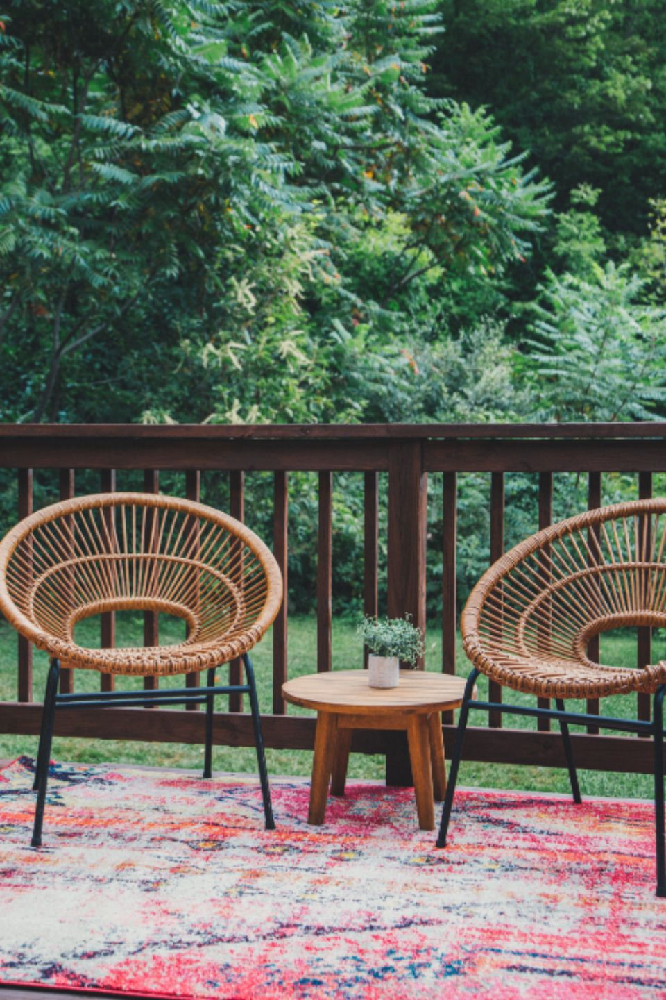

4 min read · Updated July 2026
How often to restain a deck in Tennessee humidity

Most decks around here want attention every two to three years. Railings and fences can usually go longer. Here's what the sources say, and what moves the number up or down.
What the sources say
| Source | What they say |
|---|---|
| Angi1 | Restain every two to three years |
| Bob Vila2 | Oil-based every 3–5 years, water-based 2–3, solid 4–5 |
| USDA Forest Products Lab3 | Semi-transparent on decking: 2–3 years on new smooth wood, 3–6 years on weathered rough wood |
| USDA Forest Products Lab4 | Clear water-repellent sealers: about 1 year on exposed deck surfaces |
Those are averages. The lab's own table says its numbers are for an average location in the continental United States3. Chattanooga isn't average.
Why Tennessee is harder on decks
We get about 55 inches of rain a year here5, and average humidity is about 72%, and highest in September6. Wet wood that dries slowly grows mildew, and mildew breaks down a finish from the top. Add strong summer sun on open decks and you get wear from both sides.
What makes yours last longer or shorter
Shorter
- Full afternoon sun on the deck floor
- Heavy shade and leaf piles
- Clear or very light finishes (less pigment, less UV protection)
- Dogs, grills, planters, kids
Longer
- Vertical surfaces: railings, fences, siding
- Good airflow under and around the deck
- Semi-transparent with good pigment
- A yearly wash and a quick check
The cheapest way to keep a deck nice
Recoat before it wears through. A maintenance coat on a faded deck costs a fraction of stripping a failed one. That's the whole idea behind our maintenance plans, and why our dashboard reminds us to call you before your deck needs it.
And check the structure while you're at it. The North American Deck and Railing Association recommends homeowners check their deck every year7.
Sources
- Angi — How Much Does It Cost to Stain a Deck? (2026 data)
- Bob Vila — Cost to Stain a Deck
- USDA Forest Products Lab — Exterior Wood in the South (FPL-GTR-69), Table 7 and “Decks and Porches”
- USDA Forest Products Lab — Finishes for Wood Decks (FinishLine, rev. 2013)
- NOAA NCEI — 1991–2020 monthly precipitation normals, Chattanooga airport (USW00013882)
- Wikipedia — Chattanooga climate table (NOAA normals; humidity 1961–1990)
- NADRA — Check Your Deck during Deck Safety Month